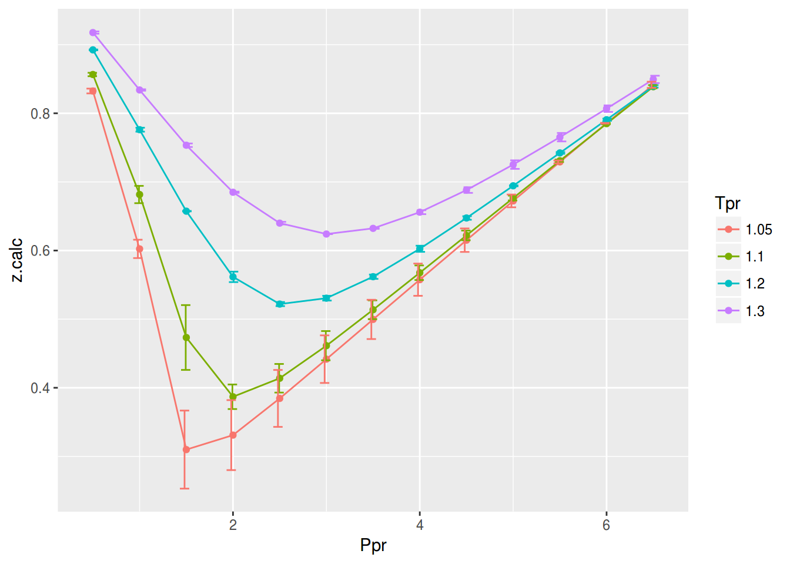
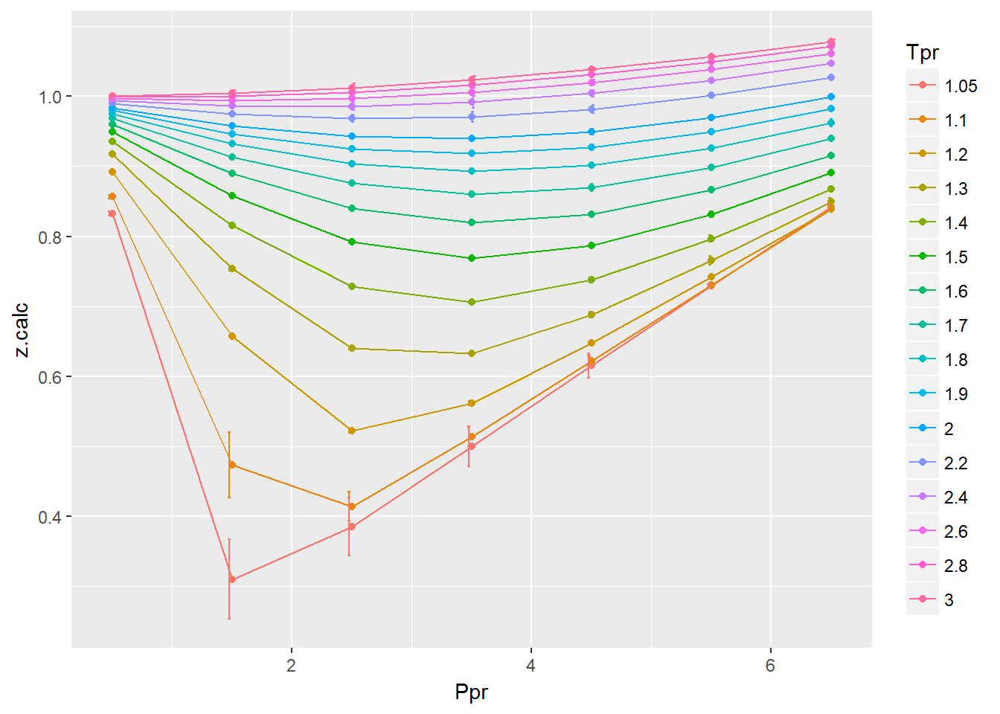
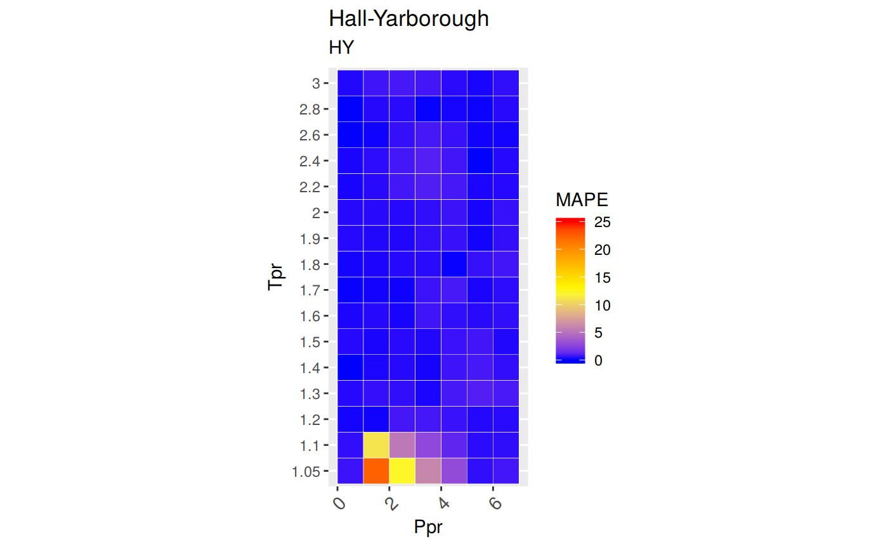
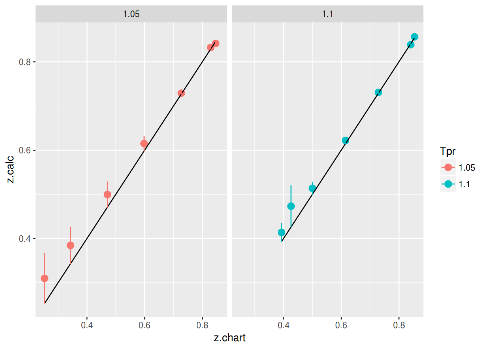

Kenneth Hall and Lyman Yarborough used the hard-sphere equation as the basis for the equation of state. They tested the correlation with 12 reservoir gas reservoir systems up to Ppr as high as 20.5. The Standing-Katz chart only extends to Ppr=15. At that moment the Standing-Katz chart had 30 years of existance. See (Hall and Yarborough 1973).
z at selected Ppr and Tpr=2.0
Use the the corelation to calculate z. From the Standing-Katz chart we obtain a digitized point at the given Tpr and Ppr.
# get a z value using HY
library(zFactor)
ppr <- 1.5
tpr <- 2.0
z.calc <- z.HallYarborough(pres.pr = ppr, temp.pr = tpr)
# get a z value from the SK chart at the same Ppr and Tpr
z.chart <- getStandingKatzMatrix(tpr_vector = tpr,
pprRange = "lp")[1, as.character(ppr)]
# calculate the APE (Average Percentage Error)
ape <- abs((z.calc - z.chart) / z.chart) * 100
df <- as.data.frame(list(Ppr = ppr, z.calc =z.calc, z.chart = z.chart, ape=ape))
rownames(df) <- tpr
df Ppr z.calc z.chart ape
2 1.5 0.9580002 0.956 0.209229z at selected Ppr and Tpr = 1.1
From the Standing-Katz chart we obtain a digitized point:
library(zFactor)
ppr <- 1.5
tpr <- 1.1
z.calc <- z.HallYarborough(pres.pr = ppr, temp.pr = tpr)
# From the Standing-Katz chart we obtain a digitized point:
z.chart <- getStandingKatzMatrix(tpr_vector = tpr,
pprRange = "lp")[1, as.character(ppr)]
# calculate the APE
ape <- abs((z.calc - z.chart) / z.chart) * 100
df <- as.data.frame(list(Ppr = ppr, z.calc =z.calc, z.chart = z.chart, ape=ape))
rownames(df) <- tpr
df Ppr z.calc z.chart ape
1.1 1.5 0.4732393 0.426 11.08903We see here a noticeable difference between the values of
zfrom theHYcorrelation and the value read from the Standing-Katz chart. This is expected at these low pressures and temperatures. This area is a challenge for all of the correlations as well.
z for combinations of Ppr and Tpr
In this example we provide vectors instead of a single point. With the same ppr and tpr vectors that we use for the correlation, we do the same for the Standing-Katz chart. We want to compare both and find the absolute percentage error.
library(zFactor)
ppr <- c(0.5, 1.5, 2.5, 3.5, 4.5, 5.5, 6.5)
tpr <- c(1.05, 1.1, 1.7, 2)
# calculate using the correlation
z.calc <- z.HallYarborough(ppr, tpr)
# With the same ppr and tpr vector, we do the same for the Standing-Katz chart
z.chart <- getStandingKatzMatrix(ppr_vector = ppr, tpr_vector = tpr)
ape <- abs((z.calc - z.chart) / z.chart) * 100
# calculate the APE
cat("z.correlation \n"); print(z.calc)
cat("\n z.chart \n"); print(z.chart)
cat("\n APE \n"); print(ape)z.correlation
0.5 1.5 2.5 3.5 4.5 5.5 6.5
1.05 0.8324659 0.3098781 0.3844710 0.4996188 0.6150882 0.7291019 0.8415294
1.1 0.8565046 0.4732393 0.4138513 0.5136995 0.6220391 0.7307972 0.8386698
1.7 0.9682547 0.9134862 0.8756412 0.8605668 0.8694525 0.8978885 0.9396353
2 0.9838234 0.9580002 0.9426939 0.9396286 0.9490995 0.9697839 0.9994317
z.chart
0.5 1.5 2.5 3.5 4.5 5.5 6.5
1.05 0.829 0.253 0.343 0.471 0.598 0.727 0.846
1.10 0.854 0.426 0.393 0.500 0.615 0.729 0.841
1.70 0.968 0.914 0.876 0.857 0.864 0.897 0.942
2.00 0.982 0.956 0.941 0.937 0.945 0.969 1.003
APE
0.5 1.5 2.5 3.5 4.5 5.5
1.05 0.41807702 22.48144801 12.09066991 6.0761856 2.8575603 0.28912295
1.1 0.29327707 11.08903030 5.30568143 2.7398940 1.1445758 0.24652442
1.7 0.02631234 0.05621824 0.04096114 0.4162014 0.6310709 0.09904802
2 0.18568379 0.20922900 0.18000605 0.2805309 0.4338140 0.08089785
6.5
1.05 0.5284438
1.1 0.2770741
1.7 0.2510320
2 0.3557593You can see errors of 22.48% and 12.09% in the isotherm
Tpr=1.05atPpr=1.5 and 2.5, respectively. Other errors, greater than one, can also be found at the isothermTpr=1.1`. Then, the rest of the curves are fine.
isotherms
We apply the function summary over the transpose of the matrix. Applying the transpose will alow us to see the statistics at each of the isotherms.
sum_t_ape <- summary(t(ape))
sum_t_ape 1.05 1.1 1.7 2
Min. : 0.2891 Min. : 0.2465 Min. :0.02631 Min. :0.0809
1st Qu.: 0.4733 1st Qu.: 0.2852 1st Qu.:0.04859 1st Qu.:0.1828
Median : 2.8576 Median : 1.1446 Median :0.09905 Median :0.2092
Mean : 6.3916 Mean : 3.0137 Mean :0.21726 Mean :0.2466
3rd Qu.: 9.0834 3rd Qu.: 4.0228 3rd Qu.:0.33362 3rd Qu.:0.3181
Max. :22.4814 Max. :11.0890 Max. :0.63107 Max. :0.4338 We see that the errors in
zare considerable with a Min. : 0.2891 % and Max. :22.4814 % forTpr=1.05, and a Min. : 0.2465 % and Max. :11.0890 % forTpr=1.10.
The Hall-Yarborough correlation shows a very high error at values of Tpr lower or equal than 1.1, being Tpr=1.05 the worst curve to calculate z values from. Keep that in mind. We will explore later a comparative tile chart where we confirm these early calculations.
Tpr
Let’s see the numbers now for higher values of Tpr at various values of Ppr.
library(zFactor)
# enter vectors for Tpr and Ppr
tpr2 <- c(1.2, 1.3, 1.5, 2.0, 3.0)
ppr2 <- c(0.5, 1.5, 2.5, 3.5, 4.5, 5.5)
# get z values from the SK chart
z.chart <- getStandingKatzMatrix(ppr_vector = ppr2, tpr_vector = tpr2, pprRange = "lp")
# We do the same with the HY correlation:
# calculate z values at lower values of Tpr
z.calc <- z.HallYarborough(pres.pr = ppr2, temp.pr = tpr2)
ape <- abs((z.calc - z.chart) / z.chart) * 100
# calculate the APE
cat("z.correlation \n"); print(z.calc)
cat("\n z.chart \n"); print(z.chart)
cat("\n APE \n"); print(ape)z.correlation
0.5 1.5 2.5 3.5 4.5 5.5
1.2 0.8924176 0.6573432 0.5219634 0.5618489 0.6474310 0.7422294
1.3 0.9176300 0.7534433 0.6399020 0.6323003 0.6881127 0.7651710
1.5 0.9496855 0.8581232 0.7924067 0.7687902 0.7868071 0.8316848
2 0.9838234 0.9580002 0.9426939 0.9396286 0.9490995 0.9697839
3 1.0004261 1.0041806 1.0118999 1.0234786 1.0386327 1.0569640
z.chart
0.5 1.5 2.5 3.5 4.5 5.5
1.20 0.893 0.657 0.519 0.565 0.650 0.741
1.30 0.916 0.756 0.638 0.633 0.684 0.759
1.50 0.948 0.859 0.794 0.770 0.790 0.836
2.00 0.982 0.956 0.941 0.937 0.945 0.969
3.00 1.002 1.009 1.018 1.029 1.041 1.056
APE
0.5 1.5 2.5 3.5 4.5 5.5
1.2 0.06522262 0.05224243 0.5709802 0.5577242 0.3952245 0.16590798
1.3 0.17795221 0.33818375 0.2981152 0.1105437 0.6012676 0.81305005
1.5 0.17779256 0.10207082 0.2006642 0.1571161 0.4041660 0.51617648
2 0.18568379 0.20922900 0.1800061 0.2805309 0.4338140 0.08089785
3 0.15708015 0.47764307 0.5992268 0.5365750 0.2274063 0.09128453At
Tprabove or equal to 1.2 theHYcorrelation behaves very well.
isotherms
Now, let’s apply the function summary over the transpose of the matrix to observe the error of the correlation at each isotherm.
sum_t_ape <- summary(t(ape))
sum_t_ape 1.2 1.3 1.5 2
Min. :0.05224 Min. :0.1105 Min. :0.1021 Min. :0.0809
1st Qu.:0.09039 1st Qu.:0.2080 1st Qu.:0.1623 1st Qu.:0.1814
Median :0.28057 Median :0.3181 Median :0.1892 Median :0.1975
Mean :0.30122 Mean :0.3899 Mean :0.2597 Mean :0.2284
3rd Qu.:0.51710 3rd Qu.:0.5355 3rd Qu.:0.3533 3rd Qu.:0.2627
Max. :0.57098 Max. :0.8131 Max. :0.5162 Max. :0.4338
3
Min. :0.09128
1st Qu.:0.17466
Median :0.35252
Mean :0.34820
3rd Qu.:0.52184
Max. :0.59923 In all, the error of
zat these isotherms is less than 0.82%. Pretty good.
SK chart values vs HY correlationNow, we will be plotting the difference between the z values in the Standing-Katz and the z values calculated by Hall-Yarborough. For the moment let’s not pay attention to the numerical error but to the error bars in the plot (the orange bars).
library(zFactor)
library(tibble)
library(ggplot2)
tpr2 <- c(1.05, 1.1, 1.2, 1.3)
ppr2 <- c(0.5, 1.0, 1.5, 2, 2.5, 3.0, 3.5, 4.0, 4.5, 5.0, 5.5, 6.0, 6.5)
sk_corr_2 <- createTidyFromMatrix(ppr2, tpr2, correlation = "HY")
as.tibble(sk_corr_2)
p <- ggplot(sk_corr_2, aes(x=Ppr, y=z.calc, group=Tpr, color=Tpr)) +
geom_line() +
geom_point() +
geom_errorbar(aes(ymin=z.calc-abs(dif), ymax=z.calc+abs(dif)), width=.4,
position=position_dodge(0.05))
print(p)
# A tibble: 52 x 5
Tpr Ppr z.chart z.calc dif
<chr> <dbl> <dbl> <dbl> <dbl>
1 1.05 0.5 0.829 0.8324659 -0.003465859
2 1.1 0.5 0.854 0.8565046 -0.002504586
3 1.2 0.5 0.893 0.8924176 0.000582438
4 1.3 0.5 0.916 0.9176300 -0.001630042
5 1.05 1.0 0.589 0.6023739 -0.013373916
6 1.1 1.0 0.669 0.6816110 -0.012611042
7 1.2 1.0 0.779 0.7761052 0.002894780
8 1.3 1.0 0.835 0.8339593 0.001040688
9 1.05 1.5 0.253 0.3098781 -0.056878063
10 1.1 1.5 0.426 0.4732393 -0.047239269
# ... with 42 more rowsAs we were expecting, the errors can be found on Tpr=1.05 and Tpr=1.1
Tpr curvesIn this last example, we compare the values of z at all the isotherms. We use the function getCurvesDigitized in the zfactor package to obtain all the isotherms or Tpr curves in the Standing-Katz chart that have been digitized. The next function createTidyFromMatrix calculates z using the correlation and prepares a tidy dataset ready to plot.
library(ggplot2)
library(tibble)
# get all `lp` Tpr curves
tpr_all <- getStandingKatzTpr(pprRange = "lp")
ppr <- c(0.5, 1.5, 2.5, 3.5, 4.5, 5.5, 6.5)
sk_corr_all <- createTidyFromMatrix(ppr, tpr_all, correlation = "HY")
as.tibble(sk_corr_all)
p <- ggplot(sk_corr_all, aes(x=Ppr, y=z.calc, group=Tpr, color=Tpr)) +
geom_line() +
geom_point() +
geom_errorbar(aes(ymin=z.calc-dif, ymax=z.calc+dif), width=.4,
position=position_dodge(0.05))
print(p)
# A tibble: 112 x 5
Tpr Ppr z.chart z.calc dif
<chr> <dbl> <dbl> <dbl> <dbl>
1 1.05 0.5 0.829 0.8324659 -3.465859e-03
2 1.1 0.5 0.854 0.8565046 -2.504586e-03
3 1.2 0.5 0.893 0.8924176 5.824380e-04
4 1.3 0.5 0.916 0.9176300 -1.630042e-03
5 1.4 0.5 0.936 0.9359773 2.267004e-05
6 1.5 0.5 0.948 0.9496855 -1.685473e-03
7 1.6 0.5 0.959 0.9601420 -1.141963e-03
8 1.7 0.5 0.968 0.9682547 -2.547035e-04
9 1.8 0.5 0.974 0.9746397 -6.396615e-04
10 1.9 0.5 0.978 0.9797268 -1.726818e-03
# ... with 102 more rowsAs we saw before, we confirm that the greatest errors are localized in two of the
Tprcurves: at 1.05 and 1.1.
What we will see here is the distribution of the Mean Average Percentage Error or MAPE accross all the Tpr isotherms and Ppr grids. Remember from the README: red and yellow are bad.
# MSE: Mean Squared Error
# RMSE: Root Mean Sqyared Error
# RSS: residual sum of square
# RMSLE: Root Mean Squared Logarithmic Error. Penalizes understimation.
# MAPE: Mean Absolute Percentage Error = AARE
# MPE: Mean Percentage error = ARE
# MAE: Mean Absolute Error
library(dplyr)
grouped <- group_by(sk_corr_all, Tpr, Ppr)
smry_tpr_ppr <- summarise(grouped,
RMSE= sqrt(mean((z.chart-z.calc)^2)),
MPE = sum((z.calc - z.chart) / z.chart) * 100 / n(),
MAPE = sum(abs((z.calc - z.chart) / z.chart)) * 100 / n(),
MSE = sum((z.calc - z.chart)^2) / n(),
RSS = sum((z.calc - z.chart)^2),
MAE = sum(abs(z.calc - z.chart)) / n(),
RMLSE = sqrt(1/n()*sum((log(z.calc +1)-log(z.chart +1))^2))
)
ggplot(smry_tpr_ppr, aes(Ppr, Tpr)) +
geom_tile(data=smry_tpr_ppr, aes(fill=MAPE), color="white") +
scale_fill_gradient2(low="blue", high="red", mid="yellow", na.value = "pink",
midpoint=12.5, limit=c(0, 25), name="MAPE") +
theme(axis.text.x = element_text(angle=45, vjust=1, size=11, hjust=1)) +
coord_equal() +
ggtitle("Hall-Yarborough", subtitle = "HY")
Tpr and Ppr values that show more errorThis is just plotting the couple of isotherms where we see the largest errors.
library(dplyr)
sk_corr_all %>%
filter(Tpr %in% c("1.05", "1.1")) %>%
ggplot(aes(x = z.chart, y=z.calc, group = Tpr, color = Tpr)) +
geom_point(size = 3) +
geom_line(aes(x = z.chart, y = z.chart), color = "black") +
facet_grid(. ~ Tpr) +
geom_errorbar(aes(ymin=z.calc-abs(dif), ymax=z.calc+abs(dif)),
position=position_dodge(0.05))
Finally, the dataframe with the calculated errors between the z from the correlation and the z read from the chart:
as.tibble(smry_tpr_ppr)# A tibble: 112 x 9
# Groups: Tpr [?]
Tpr Ppr RMSE MPE MAPE MSE RSS
<chr> <dbl> <dbl> <dbl> <dbl> <dbl> <dbl>
1 1.05 0.5 0.003465859 0.4180770 0.4180770 1.201218e-05 1.201218e-05
2 1.05 1.5 0.056878063 22.4814480 22.4814480 3.235114e-03 3.235114e-03
3 1.05 2.5 0.041470998 12.0906699 12.0906699 1.719844e-03 1.719844e-03
4 1.05 3.5 0.028618834 6.0761856 6.0761856 8.190377e-04 8.190377e-04
5 1.05 4.5 0.017088211 2.8575603 2.8575603 2.920070e-04 2.920070e-04
6 1.05 5.5 0.002101924 0.2891229 0.2891229 4.418084e-06 4.418084e-06
7 1.05 6.5 0.004470634 -0.5284438 0.5284438 1.998657e-05 1.998657e-05
8 1.1 0.5 0.002504586 0.2932771 0.2932771 6.272952e-06 6.272952e-06
9 1.1 1.5 0.047239269 11.0890303 11.0890303 2.231549e-03 2.231549e-03
10 1.1 2.5 0.020851328 5.3056814 5.3056814 4.347779e-04 4.347779e-04
# ... with 102 more rows, and 2 more variables: MAE <dbl>, RMLSE <dbl>getStandingKatzMatrix is equivalent to using the sapply function with the internal function .z.HallYarborough (the dot means it’s internal), which we call adding the prefix zFactor:::. That is, the package name and three colons.
# test HY with 1st-derivative using the values from the paper
ppr <- c(0.5, 1.5, 2.5, 3.5, 4.5, 5.5, 6.5)
tpr <- c(1.3, 1.5, 1.7, 2)
hy <- sapply(ppr, function(x)
sapply(tpr, function(y) zFactor:::.z.HallYarborough(pres.pr = x, temp.pr = y)))
rownames(hy) <- tpr
colnames(hy) <- ppr
print(hy) 0.5 1.5 2.5 3.5 4.5 5.5 6.5
1.3 0.9176300 0.7534433 0.6399020 0.6323003 0.6881127 0.7651710 0.8493794
1.5 0.9496855 0.8581232 0.7924067 0.7687902 0.7868071 0.8316848 0.8906351
1.7 0.9682547 0.9134862 0.8756412 0.8605668 0.8694525 0.8978885 0.9396353
2 0.9838234 0.9580002 0.9426939 0.9396286 0.9490995 0.9697839 0.9994317